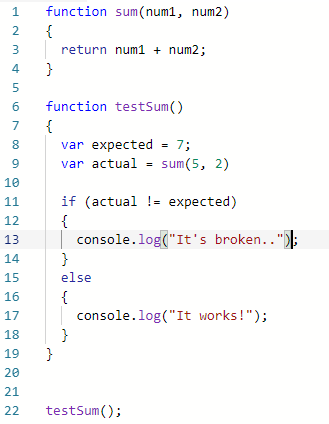

What was your first impression of the Repl.it website?
From what I heard about Repl.it I had the idea it will be like codepen.io, mainly for the interface
having show and edit HTML, CSS, and JavaScript at once. It looks alot more than just another codepen,
it's also a tutorial applications for a vast name of languages as well as a remote IDE (a set of
development tools). Codepen is a code editor, but mainly it's used as front-end gallery for
developers/designers
How did you find using it in practice? Confusing? Useful?
Easy to pick up if one has experience using CodePen and GitHub.
When you say the name of the website in your head, how are you pronouncing it? "REPLIT"?
"REP-ILL-IT"? "REPELL-IT"?
REPEL-IT.
What code readability habit will you begin implementing today?
Use auto format/indent setting for the MAJORITY of the code: Shift + Alt + F.
Does code readability seem important to you, or unnecessarily fussy? Justify your answer.
It's important to me, in a OCD kind of way. It is also important if someone else is looking at my code,
and they understanding what is what, and where is where.
Have a go at writing a function below that would make the above function print out `"It
works!"`:

Do you think you would prefer using Unit Testing or Test Driven Development? Why?
I like the idea of Unit Testing as the whole solution is divided into smaller parts, which makes it
easier to diagnose the problem and solve it.
How could these techniques be used together to make code that is reliable?
TDD is useful in terms of technical design of the code, and when spur of moment errors occur, unit
testing is required.
Was your initial response to the idea of testing, "That sounds useful" or "That sounds like a
hassle"? Why?
It got to be done, how else are we suppose to make it work.
Pick two problem solving techniques you would like to put into practice. Which ones have you
chosen?
I would like to use more Pseudocode for problem/process solving and use more console.logging, even if
solution is GUI-based.
How will you implement these techniques into your day to day coding flow? How will you make sure that
you actually do them?
Prior to coding or using coding comments to explain intended method within the actual code.
How did you find working through the Variables and Objects kata?
It was pretty self-explanatory, I was mostly following the workshop video for Sprint 4, but the
commented code gave the rest of the video away.
Did you look at the tests while coding the kata? Was it helpful?
Yes I did.
What was the highlight of this kata for you?
Practically understand nested properties for objects.
Did you find you preferred following the steps given to you or using the test outputs in your repl? Why?
I perfer to start with the given steps, then if I'm stuck I'll use the test outputs.
What was the most challenging part of Super FizzBuzz for you?
Getting the hang of working with a dyanmic language like JavaScript.
How did you find using pseudocode during this kata?
I did inital a rough pseudocode algorithm, but the process of writing the actual code eventually neglected the algorithm. But the final solution did used the algorithm by the exact steps.
What was a surprising moment for you in this Gradebook Kata?
Learning to use the reduce() method was surprising for it robustness and surprisingly simple outcome.
Did you go back and rewrite code as you got to new steps? Is there anything you would change about your final code?
If I had more refined understanding of the reduce() method I could use that plus with minimal lines of code (if possible).
On a scale of 1 - 5, 5 means 'These built in methods are hard!' and 1 means 'Built in methods are easy. Piece of cake' - how are you feeling following this Built-In-Methods kata?
For the first method, I would realistically say it's a 4. The second one would be a 3 because I not too hard to solve, not any lower as my inital solution didn't require the map function. The third method has to be an absoulute 5, I was going almost going nowhere. The fourth method is an 2 because it almost smooth transition from start to finish, despite issues to solve. The last method was a 1 as I got it working on the first go.